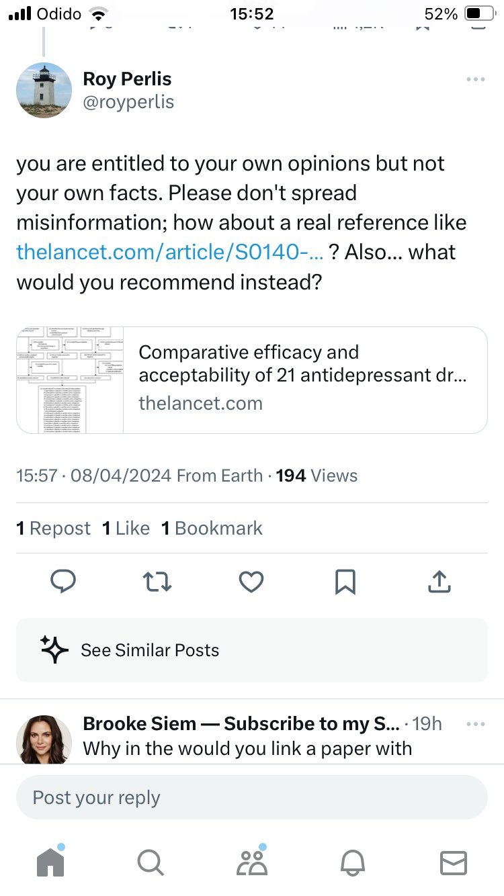
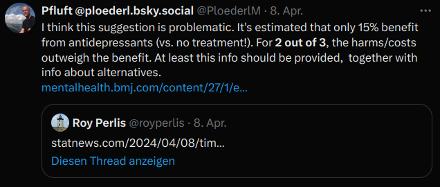

Response to ‘The time has come for over-the-counter antidepressants’ by Roy Perlis
Roy Perlis, Harvard professor of psychiatry, recently suggested that SSRIs should be available over the counter, as they “have repeatedly been shown to be safe and effective for treating major depression and anxiety disorders” (Perlis 2024). In the following, I will examine some of his arguments, as they are either in contradiction to the evidence or give a biased, uncritical summary on the evidence.
Are SSRI’s save and effective? The scientific discussion is ongoing [(Michael P. Hengartner 2021; Michael P. Hengartner and Plöderl 2018; Munkholm, Paludan-Müller, and Boesen 2019). The average efficacy (around 2 points on the Hamilton Depression Scale) in short-term clinical trials is below typical thresholds of clinical significance (Michael P. Hengartner and Plöderl 2021). Recently, it has been argued that the average drug-placebo difference should not be used because of a non-normal distribution of the outcome. However, even taking this into account, the drug-placebo difference in „responder“ status is about 11% at best, and only 6% when considering a reduction of 16 Hamilton points from baseline as criterion for „responder“ (Plöderl 2022; Stone et al. 2022). It has been estimated that, compared to natural course, only 15% more benefit from treatment with antidepressants, and given the costs and harms, this would be below the smallest worthwhile difference for about 2 of 3 patients (Sahker et al. 2024).
Referring to the STAR*D study, Perlis writes that “one in three people with depression get well with an initial antidepressant medication”. However, the STAR*D study had no placebo control group, thus we do not know how many people would have got better without treatment, with placebo, or treatments other than medication. A critical look at long-term outcomes raises doubts on the long-term efficacy and relapse-preventive effect of antidepressants (Michael P. Hengartner 2020). A review of longer-term studies without the problematic discontinuation designs reveals that psychotherapy alone or a combination of psychotherapy with antidepressants is superior to antidepressants (Furukawa et al. 2021). Of note, hardly any long-term study included a tapering phase and potential problems with stopping medication after the recommended period of treatment. This has to be taken into account when considering the finding that a combination of antidepressants with psychotherapy is equally effective to psychotherapy alone.
Furthermore, with the modest efficacy of antidepressants, which is likely overestimated due to methodological biases (Michael P. Hengartner and Plöderl 2018), it does not take much harms so that the harm/benefit ratio is problematic for the majority of patients. Most common side effects for SSRIs are sexual dysfunctions, with up to 80% reporting these, compared to about 12% treated with placebo (Serretti and Chiesa 2009; SALSEX Working Study Group et al. 2019). Another common problem is withdrawal symptoms after trying to stop medication (Davies and Read 2018; Fava et al. 2015). To sum up, the notion that antidepressants are safe and effective is not supported by the evidence, at least not for the average patient. On the contrary, there is substantial evidence that, for most patients on antidepressants, the harm/benefit ratio is problematic. Interestingly, even Key Opinion Leader David Nutt and colleagues, who once defended antidepressants [“one of the most effective of all drugs” (Nutt et al. 2014) now conclude that “Even the best-performing antidepressant drugs show modest efficacy, non-negligible side effects, discontinuation problems and high relapse rates, highlighting the need for new, improved treatments” (Daws et al. 2022).
I agree that access to alternative treatments is often difficult. I also agree with Perlis that Psychotherapy is often not accessible, acceptable, or helpful, but psychotherapy is not the only alternative to treat depression. There are also other alternatives. For example, it has been suggested to consider basic interventions as the only intervention or at least as complementary intervention exercise, etc (Selalmazidou and Bschor 2023).
For antidepressants and suicide risk, Perlis says that “Among people age 25 and older, there is clear evidence that taking antidepressants does not increase the risk for suicide — in fact, the risk of suicidal thoughts or acts is reduced in this group, particularly among those 65 and older.”
This summary of the evidence is misleading, as it only refers to an older review of short-term studies on adults submitted to the FDA (Stone et al. 2009). In our re-analysis of the FDA database, there was a statistically significant drug-placebo difference for suicide attempts, whereas for suicides, statistical significance depended on the statistical method (M. Hengartner and Plöderl 2019; Plöderl et al. 2020). Our results may have overestimated or underestimated the problem. However, it can be said with quite some certainty that antidepressants do not reduce suicide risk. Furthermore, longer-term studies on adults also reported an increase for suicide attempts for those on antidepressants compared to placebo (Baldessarini et al. 2015; Braun et al. 2016). Numerically, the risk was also increased for suicides, but not statistically significant, thus the evidence is inconclusive here. Because of the rarity of suicidal behavior in clinical trials, observational studies should be considered, too. In our systematic review, which was an update of an older review (Barbui, Esposito, and Cipriani 2009), there was a significant increase of suicide attempts for those on antidepressants versus those without antidepressant treatment, and for suicide, the evidence was inconclusive (Michael P. Hengartner et al. 2021). Therefore, even with a pro-drug-biased view on the evidence the conclusion that “there is clear evidence that taking antidepressants does not increase the risk for suicide” is not supported by the evidence. A statement such as “there is clear evidence that taking antidepressants does not decrease the risk for suicide for the average patient; rather, there is evidence that there is an increase of suicide risk” would be in accordance with the evidence. This is astonishing for a drug that is claimed to effectively reduce depression, one of the most important risk factor for suicide.
Then there is the statement “Some still question the biological basis of this disorder”. What does the efficacy of antidepressant drugs have to do with the biological foundation of depression? Or is there the implicit assumption that antidepressants “cure” depression, that is, correct a chemical imbalance?
Perlis then refers to a study which found associations of 100 genes with depression. However, genetic research into depression experienced major drawbacks, because candidate genes could not be replicated in large databases (Border et al. 2019; Curtis 2021) and genetic information could only explain a small fraction of the variance. In contrast, psychosocial factors are much more strongly associated with depression.
Perlis also references a single neuroimaging study showing differences in the brains of people with depression. Thanks to the PubPeer browser plugin (highly recommended), I was lead to a study which could not replicate the findings (https://www.biorxiv.org/content/10.1101/416321v1 - The study was published in the meantime). Perlis missed systematic reviews and larger studies on the issue. These studies reported that brains of depressed people are remarkably similar to the brains of healthy individuals. That is, the observed differences are tiny (Winter et al. 2022), and using information from neuroimaging cannot be used to distinguish depressed from non-depressed people in any clinically meaningful way. In line with this, biomarkers of depression failed to predict depression prospectively (Kennis et al. 2020).
To sum up, to think of antidepressants as safe and effective is a very “optimistic” view on the evidence. An unbiased, evidence-based view leads to the conclusion that most patients do not benefit from antidepressants but are exposed to the harms, thus leading to a problematic harm/benefit ratio. A minority of of patients may benefit from the drugs, compared to placebo or no treatment, but we still lack robust predictors of who these patients are. Over the counter availability of the drugs without proper information about harms and benefits, and without monitoring the context of a therapeutic alliance likely leads to more harm then benefit, as I tried to show here.
This is how Perlis responded to my first reaction on Twitter (somebody sent it to me – I could not see it because I was already blocked).

My reply to Perlis’ tweet
And my commented retweet

References